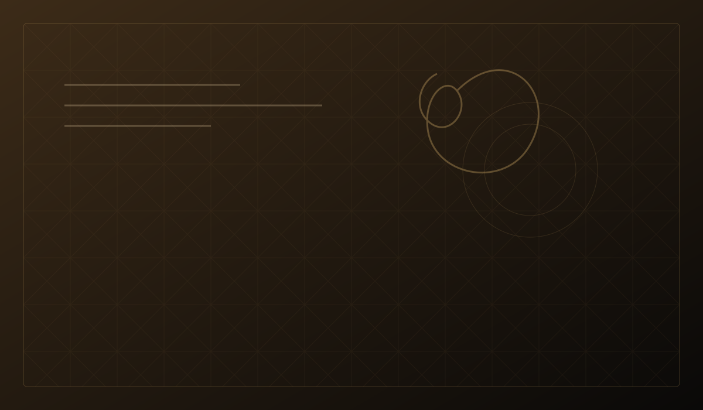
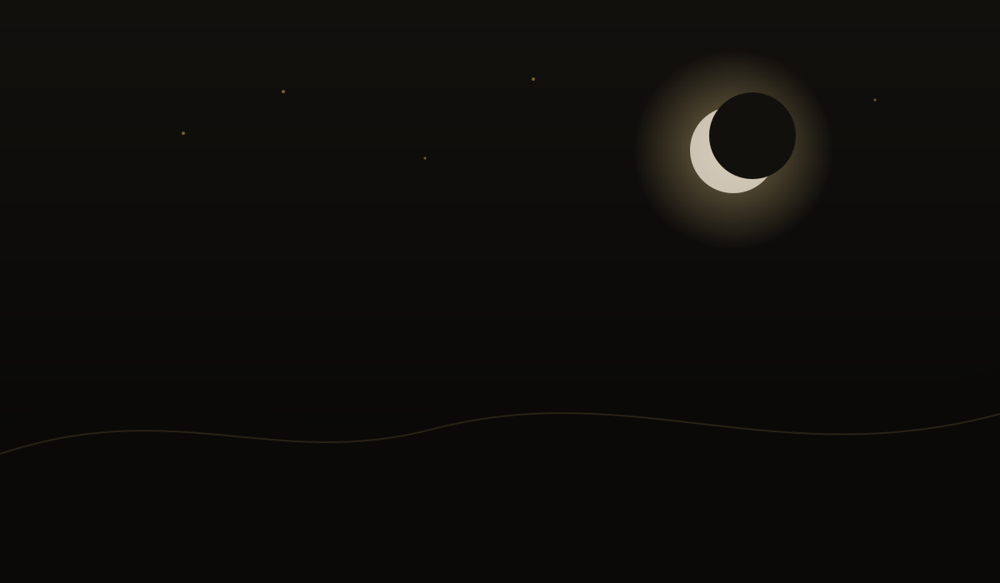

The Potter and the Cup
A short parable about cracks, usefulness and the dignity of repair.
Read the reflection →Short contemplative stories designed to be read slowly—before sleep, after prayer, or whenever the heart needs another angle on an old truth.

A short parable about cracks, usefulness and the dignity of repair.
Read the reflection →
A story of attention: one small light is enough to change how the path is seen.
Read the reflection →A meditation on hospitality, expectation and the stranger within the self.
Read the reflection →A story about making space before asking to be filled.
Read the reflection →A metaphor for remembrance: returning one thread at a time.
Read the reflection →A reflection on inherited wisdom and what it means to make it living.
Read the reflection →